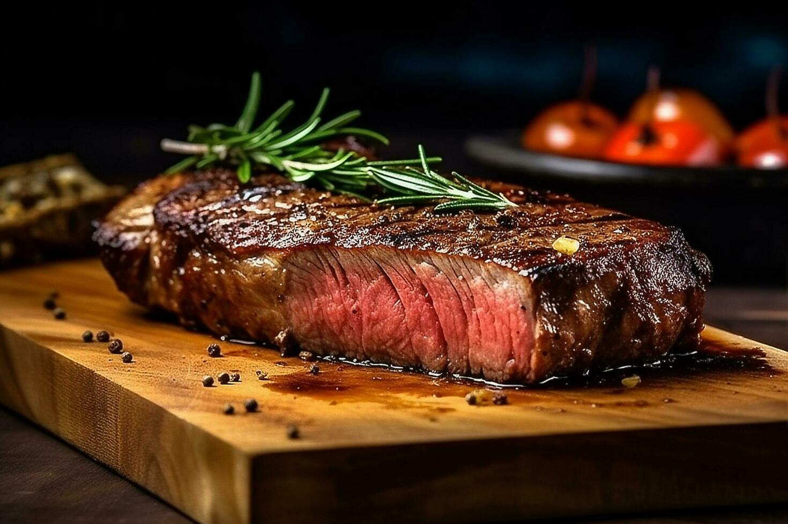

Ribeye

Description
Tender ribeye steaks cooked to juicy perfection is the best way to enjoy steaks at home (and it's not difficult to make)!
This amazing cut of beef is definitely a favorite and in my opinion, one of the most flavorful out there. There is no need for special or fancy ingredients, just steaks, seasonings, a brush of oil, and a pat of butter for perfection.
Ingredients
- Ribeye Steak, we like to use one without a bone
- Seasoning, we like to use montreal seasoning
Steps
- Bring steaks to room temperature and season per the recipe below.
- Heat grill to medium heat. Season steaks and grill them between 5 to 7 minutes on each side, depending on the desired done-ness.
- Remove steaks, dot them with butter, and allow them to rest about 5 to 10 minutes before serving.
Tips for Perfection
- If using frozen steak, be sure to let it fully thaw.
- Bring steaks to room temperature before cooking.
- A bit of vegetable or canola oil before seasoning helps the seasonings stick.
- Season steaks just before cooking.
- Preheat the cast iron pan, oven and/or grill.